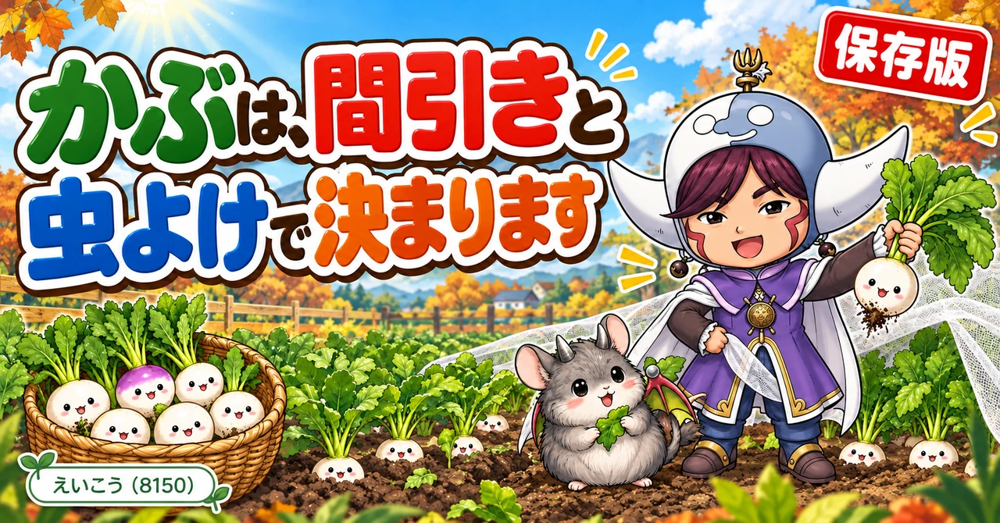
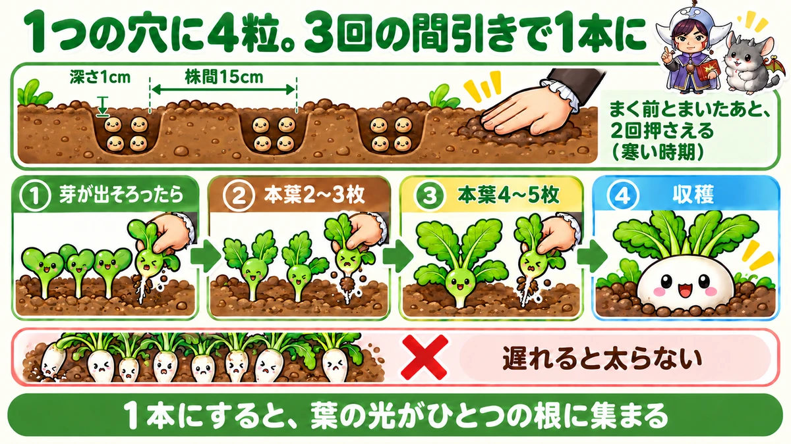
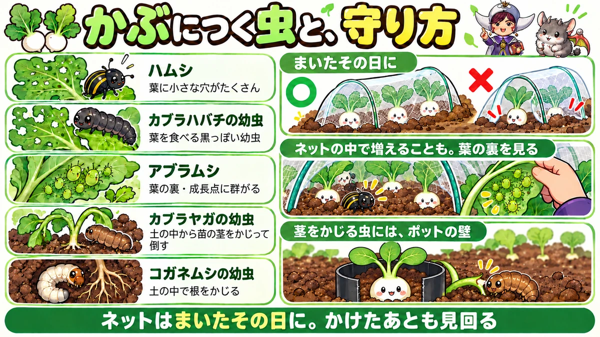
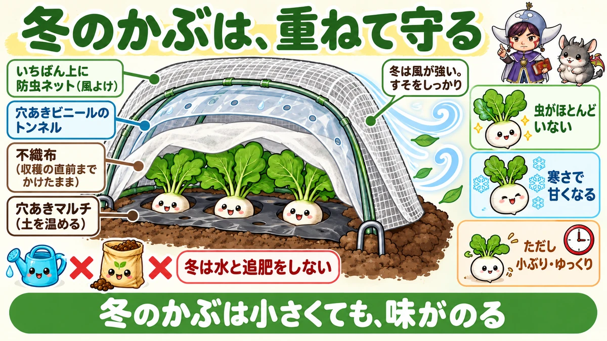

かぶの育て方｜まき時、穴まきとすじまき、3回の間引き、虫よけ、冬の育て方、収穫

📖 この記事の目次
この記事で分かること
- かぶは、まいてから1か月半から2か月ほどで穫れる、育つのが早い根菜です。
- まく時期は春と秋。いちばん育てやすいのは、虫が減っていく秋から冬です。
- タネは深さ1cmほど。穴まきなら1つの穴に4粒ほどまき、間引きながら1本にします。
- 間引きは3回。遅れると、かぶが太らなくなります。
- 前の野菜の肥料が残っていれば、肥料はほとんど要りません。入れすぎると虫や形の乱れの原因になります。
- アブラナ科なので、虫に好かれます。まいたらすぐ防虫ネットをかけ、すそをふさぎます。
- 冬は虫がほとんどおらず、寒さで甘くなります。ただし、育ちはゆっくりで小ぶりになります。
- 小かぶ、中かぶ、大かぶ。同じ品種でも、株と株のあいだで大きさを変えられるものがあります。
かぶは、生でサラダにしても、漬物にしても、煮物にしてもおいしい野菜です。白くて丸い根だけでなく、葉も炒め物などに使えます。まいてから収穫までが短く、場所もとらないので、家庭菜園でも人気の根菜です。
ただ、「虫に葉を穴だらけにされた」「なかなか丸くならなかった」「割れてしまった」という声もよく聞きます。かぶは、まき方と間引き、それに虫よけさえ押さえれば、とても育てやすい野菜です。この記事では、まく時期から収穫まで順番に書いていきます。
早見：かぶの基本
まく時期の目安
- 春：3月〜4月ごろ。5月〜6月に収穫
- 秋：8月下旬〜10月ごろ。いちばん育てやすい
- 冬：11月以降も、不織布やビニールトンネルで防寒すればまける。小ぶりになる
まき方の目安
- 深さ：約1cm
- 穴まき：株間15cmほど。1つの穴に4粒ほど
- すじまき：深さ1cmほどの溝に、少しずつまく
- まいたら：手のひらで押さえ、水をやり、不織布と防虫ネット
間引きの目安
- 1回目：芽が出そろったら、1本抜く
- 2回目：本葉が2〜3枚のころ、もう1本抜く
- 3回目：本葉が4〜5枚のころ、1本にする
収穫の目安
- 小かぶなら、秋まきで1か月ちょっとから2か月ほど
- 冬にまくと、育ちがゆっくりになり、時間がかかる

まく時期と季節ごとの特徴
秋：いちばんのおすすめ
かぶのまき時は、春と秋の2回あります。そのうち、初めての方にすすめられることが多いのが秋です。
秋にまいたかぶは、育ちが早く、形のきれいなかぶが穫れる、と説明されていました。9月にまけば、1か月ちょっとで収穫できるという紹介もあります。夏の暑さが和らぐにつれて、虫も少しずつ減っていきます。
ただ、秋の初めはまだ虫が多い時期です。まいたらすぐに防虫ネットをかけることが欠かせません。
秋は、早めにまくほど大きくなる
大きなかぶを穫りたいなら、まく時期は早めがよい、とされています。かぶや大根のような根菜は、まず葉を大きく育て、その葉が光を受けて作った養分を根にためて太っていきます。暖かいうちに葉を大きくしておけば、寒くなってからも葉が働き続け、根がよく太ります。
大根やかぶ、にんじんを大きく育てたいなら、10月中にはまいておいたほうがよい、という説明がありました。
秋まきは、残暑に気をつける
9月の初めにまくと、まだ厳しい暑さが残っていることがあります。芽が出たあとに、暑さで枯れてしまうこともあるので、寒冷紗や不織布をかけて守ります。
よくある失敗が、芽が出たとたんに不織布を外してしまい、強い日差しで苗が焼けてしまうことです。暑い時期は、苗がある程度大きくなるまで、不織布をふわっとかけたままにしておきます。水は、土が乾いたらやる程度で大丈夫です。
冬：虫がいない、甘くなる、でも小ぶり
11月以降にまいても、防寒をすればかぶは育ちます。冬のかぶには、いくつもよいところがあります。
- 虫の被害がほとんどなく、葉がきれいに育つ
- 土の中のコガネムシの幼虫などが休むので、根をかじられにくい
- アブラムシの被害も少ない
- 寒さに当たって、甘みが強くなる
一方で、育つのがとてもゆっくりで、大きさもあまり大きくなりません。冬にまくかぶは、小さなかぶを穫るつもりでまく、と考えておきましょう。
春：寒さが残るうちは、トンネルで
春は、3月から4月ごろにまいて、5月から6月ごろに収穫します。品種によっては、1月下旬からトンネルをかけてまけるもの、3月からはトンネルなしでまけるものもあります。タネの袋に書かれたまき時を確かめましょう。
時期をずらしてまく
小かぶは、少しずつ時期をずらしてまくと、順番に収穫を楽しめます。一度にたくさんまくと、同じころに食べごろが来て穫りきれなくなるので、少しずつまくのがおすすめです。
10月の後半からまく場合は、大かぶは思ったほど大きくならないことが多い一方、小かぶなら十分に育つ、と説明されていました。空いた場所を見つけて、小かぶをまいていくと、場所を無駄なく使えます。
5月まきという手も
春の5月の初めにまくのもおすすめだ、という説明もありました。暖かくなって芽が出やすく、育つのも早いので、7月ごろには収穫できます。夏野菜の収穫が本格的に始まる前に、ひと足先にかぶを穫れるのが利点です。
暖かい時期は虫も多くなりますが、かぶは根を食べる野菜なので、葉が少しくらい虫に食べられても、それほど大きな影響はない、と説明されていました。
かぶが好きな温度
タネの袋には、芽が出やすい温度は20〜25℃、育ちやすい温度は15〜20℃ほどと書かれているものがありました。芽を出すには少し暖かさが必要で、育つのは涼しいくらいの気温が向いている、ということです。寒い時期にまくときに防寒が必要なのは、このためです。
品種の選び方
大きさで選ぶ
かぶには、小さいうちに穫る小かぶから、中かぶ、さらに大きくなる大かぶまで、いろいろな大きさの品種があります。京都の聖護院かぶのように、とても大きくなるものもあります。家庭菜園で育てやすいのは、育つ期間が短い小かぶです。
大きさと日数の目安
動画で紹介されていた目安を並べておきます。
- 小かぶ：保温をしっかりすれば、1か月半ほどで直径2〜3cmになる
- 普通のかぶ：2か月半ほどかけると、直径4〜5cmの立派なかぶに育つ
すぐに穫りたいなら小かぶ、じっくり大きくしたいなら普通のかぶ、と選ぶとよいと思います。
株間で大きさを変えられる品種
品種によっては、株と株のあいだの広さを変えるだけで、小かぶから中かぶ、大かぶまで、好きな大きさで収穫できるものがあります。動画で紹介されていた耐病ひかりは、その代表で、病気に強くて作りやすいことから「迷ったらまずこれ」とすすめられていました。
ただし、まく時期によっては大かぶまで育たないこともある、と注意されていました。
割れにくい品種
耐病ひかりは、根の中がすかすかになる「す入り」が起きるのが遅く、割れにくい、とも紹介されていました。食べごろになってから少しのあいだ畑に置いておけるので、一度に穫りきれない家庭菜園には便利な性質です。
同じ品種でも、まく時期で育つ大きさが変わります。12月にまいた場合は小かぶまでが限界で、2月にまくと大かぶまで育つ、と説明されていました。
色のかぶも楽しい
根の上半分が紫色になる品種など、色のついたかぶもあります。不織布をかけただけで小かぶの大きさまでよく太り、漬物にするとおいしかった、と紹介されていました。見た目がきれいなので、ふつうのかぶといっしょに育てても楽しめます。
寒い時期にまくなら、寒さに強い品種
冬にまくなら、寒い時期でも太りやすい性質を持つ品種を選ぶと、うまくいきやすくなります。白さび病や、根にこぶができる病気に強い品種もあります。タネの袋の説明を見比べて選びましょう。
近畿地方でよく育てられる天王寺かぶを、冬に育てていた例もありました。本来は大きめになる品種ですが、冬は小ぶりになるものの、葉もしっかりしていて味がよかったそうです。
土と肥料
肥料は控えめでよい
かぶは、肥料をそれほど必要としない野菜です。前に別の野菜を育てていた場所なら、前もって肥料を入れなくても育てられる、と説明されていました。根菜は、周りの土から養分を集める力が強いからです。
むしろ、肥料が多すぎると、虫がつきやすくなったり、根の形が乱れたりと、悪い影響が出ることがある、と注意されていました。
肥料の量を変えて比べた実験
肥料の量でかぶの育ちがどう変わるかを、同じ日に同じ品種の小かぶをまいて比べた実験も紹介されていました。肥料の種類と量を変えたうねを並べ、1か月後の様子を見比べたものです。
- いちばんよく育ったのは、腐葉土と米ぬかを適量入れたうね。芽がそろい、葉もきれいで、虫もほとんどついていなかった
- 畑の野菜くずから作ったたい肥をたっぷり入れたうねも、ほぼ同じくらいよく育った。ただ、量の多いうねほど、虫がつきはじめていた
- 腐葉土と米ぬかを3倍以上入れたうねは、肥料が効きすぎて育ちが悪く、虫も多くついた
- 牛ふん、油かす、鶏ふんを多めに入れたうねも、育ちがいまひとつで、虫がついていた
- 肥料をまったく入れなかったうねは、芽が出るのも育つのも遅れた
肥料は、なさすぎても育ちが遅れ、多すぎると虫を呼んで育ちも悪くなる、ということがよく分かる結果でした。1回の実験なので、すべての畑に当てはまるとは限りませんが、「かぶの肥料は控えめに」という説明を裏づける内容です。
土づくりの時間がないとき
新しく始める場所で土づくりの時間がとれないときは、ぼかし肥を入れてすぐにまく方法も紹介されていました。量の目安は、1㎡あたり2Lほどです。
肥料を入れたら、2〜3週間あける
肥料を入れた直後にタネをまくと、肥料が分解されるときに出るガスでタネが傷んだり、うまく芽が出なかったりすることがあります。肥料を入れたら最低でも2週間、できれば3週間ほどあけてからまくのが理想だ、と説明されていました。
ただ、9月に入ってから土づくりを始めると、そのぶんまくのが遅れてしまいます。夏野菜を育てた跡地なら、肥料を入れずにそのままうねを作ってまいてかまわない、ということでした。かぶは周りから養分を集める力が強いので、最初はそれでぐんぐん育ちます。
土の表面の石を取る
土の浅いところに石が残っていると、根がそれに当たって、形がいびつになったり、二またに分かれたりすることがあります。まく前に、表面近くの石を取りのぞいておきます。
太陽熱消毒のあとは、混ぜすぎない
夏に太陽熱消毒をしたうねは、表面の土が消毒された状態になっています。そこを深く耕して上下の土を入れかえてしまうと、下にいた虫や病気のもと、雑草のタネを、せっかく消毒した表面に戻してしまいます。消毒したうねは、そのままの形でうねを整えるくらいにしておきます。
耕すときに、虫を探す
耕すときは、土の中にコガネムシの幼虫やヨトウムシのさなぎがいないかを見ておき、見つけたら取りのぞきます。前の野菜でアブラムシが多かった場合は、残った葉や茎をきれいに片づけるか、土の深いところに埋めておきます。
うねの幅
1列でまくなら、うねの幅は60cmほど。2列にするなら1mほどにして、列と列のあいだを30cmほどあける、という目安が紹介されていました。大かぶを育てる場合は、直径がとても大きくなるので、1つのうねに1列で育てます。
うねは高くしなくてよい
大根のうち、土の中に深くもぐって育つ白首の品種などは、少し高めのうねにすると根が伸びやすくなります。一方、かぶは、育つにつれて根が土の上へせり上がってくるので、うねをそれほど高くする必要はない、と説明されていました。
マルチを使うと楽
穴あきマルチを張ってまくと、雑草を抑えられ、土の温度も上がります。特に、寒くなってからまくときは、マルチで土を温めておくことが大切だとされていました。
タネのまき方
穴まき
- 株間15cmほどで、深さ1cmの穴を作る
- 1つの穴に4粒ほど、少しずつ離してまく
- 周りから土を寄せてかぶせる
- 手のひらで上から押さえる
- 水をやる
1つの穴に4粒まくのは、芽が出ないタネがあることを見込んでいるからです。芽が出たら間引いて、最後は1本にします。
深さは、深すぎず浅すぎず
かぶのタネは、深さ1cmくらいにまきます。深すぎると芽が出るのに時間がかかり、浅すぎると、特に寒い時期は芽が出ないことがある、と説明されていました。
押さえるのは、まく前とまいたあと
冬にまくときは、押さえる作業を2回する、という方法が紹介されていました。まず、まく場所を手のひらでしっかり押さえてからタネをまき、土をかけたあとにもう一度押さえます。とても大事な作業だ、と強調されていました。
押さえることで、タネと土がぴったりくっつき、土の中の水分がタネに伝わりやすくなって、芽が出やすくなります。
すじまき
かぶは、すじまきにも向いている野菜です。深さ1cmほどの溝を作り、タネを少しずつまいて、土をかけて押さえます。小かぶを並べて穫りたいときに便利なまき方です。間引きながら、株と株のあいだを広げていきます。
水のやり方
まいたあとの水は、一度にたくさんかけると、タネが流れてしまいます。少しかけたら10〜20秒ほど待ち、またかける、というのを3回くらいくり返すと、水がよくしみこむ、と紹介されていました。
じょうろの水は、うねの外で出しはじめ、流れが落ち着いてからうねの上を動かします。
不織布と防虫ネット
まいたら、不織布をかけます。大雨でタネが流れ出るのを防ぎ、乾燥も防いでくれます。寒い時期は保温にもなります。風で飛ばないように、四すみに土をのせておきます。
その上から、防虫ネットをかけます。かぶには虫がとても多くつくので、ネットはすき間なく張り、すそを土でしっかり埋めます。すそのすき間から、ちょうなどが入りこむからです。
間引き
3回に分けて、1本にする
穴まきの場合、間引きは3回に分けてするのが基本です。
- 1回目：芽が出そろって1週間ほどしたら、元気のないものを1本抜く
- 2回目：本葉（ぎざぎざした葉）が2〜3枚になったころ、もう1本抜く
- 3回目：本葉が4〜5枚になったころ、いちばん元気なものを1本残す
いきなり1本にしないのは、虫に食べられたり、枯れたりする苗が出ても、残りで補えるようにするためです。
間引きは遅れないように
間引きが遅れると、根が絡み合って、残したい株までいっしょに抜けてしまいます。また、かぶが太りはじめる時期になっても何本も残っていると、どれも小さいままになります。
11月ごろになってから間引くと、もう大きく育たないこともある、と注意されていました。サイズが小さいうちなら、早めに1つの穴に1本にしてあげれば、まだ大きく育つ可能性があります。間引かずにそのまま育てると、細く小さなかぶになります。
間引いたあとは、軽く土を寄せる
間引いたあと、残した株がぐらぐらしていたら、両側から手で軽く土を寄せて、株を安定させます。株と株のあいだを軽く耕しておくと、土に空気が入り、根の育ちがよくなります。
間引き菜も食べられる
間引いた小さな株も、葉と小さな根ごと食べられます。みそ汁の具や、おひたし、浅漬けにもなります。

虫の対策
かぶは、アブラナ科の中でも特に虫が多くつく野菜です。無農薬で育てるなら、虫の対策が最大の山場になります。
かぶにつく主な虫
- カブラハバチ：かぶの名前がつくほど、かぶに多い虫。幼虫が葉を食べる
- キスジノミハムシ：小さな甲虫。葉に小さな穴をあけ、かぶの表面もかじって傷をつける
- アブラムシ：葉の裏や成長点のあたりに群がる
- 青虫、ヨトウムシ：葉を大きくかじる
- コガネムシの幼虫：土の中で根をかじる
- カブラヤガの幼虫：土の中にひそみ、苗の茎をかじって倒す
防虫ネットの中でも、虫は増える
防虫ネットをかけていても、安心はできません。土の中にひそんでいたハムシなどが、ネットの中で出てきて、増えてしまうことがあるからです。ちょうの幼虫などはネットで防げますが、土の中から出てくる虫は防げません。
ネットをかけたあとも、ときどき葉の裏をめくって、虫がいないか確かめます。
ネットの有無で、これだけ違う
同じ日に同じ品種をまき、防虫ネットをかけたうねとかけなかったうねを比べた例がありました。ネットをかけなかったほうは虫の被害が多く、かけたほうは被害がとても少なかったそうです。ネットで完全に防げるわけではありませんが、物理的にさえぎることの効果は大きい、と話していました。
ネットをかけたうねも、1〜2週間に1回くらいは見回って、虫がいないかを確かめます。
夏のうちに土を消毒しておく
夏のあいだに、うねに透明なビニールをかけて太陽の熱で土を温める、太陽熱消毒をしておくと、土の中にいる虫の卵や幼虫を減らすことができる、と説明されていました。太陽熱消毒をしたうねは、そのあとあまり深く耕しすぎないようにします。
アブラムシは、早めに落とす
アブラムシは、数匹だったものが、あっという間に何千匹にも増えることがあります。見つけたら、すぐに手を打ちます。
やわらかい筆などで、アブラムシを葉からマルチの上に払い落とし、落ちたアブラムシに油と石けんを溶かした水をかける、という方法が紹介されていました。
アブラムシがよく集まるのは、成長点の近くの風が当たりにくいところと、温まったマルチに近い葉の裏です。そこを重点的に見ます。
茎をかじる虫には、ポットの壁
苗が根元で折れたように倒れていたら、カブラヤガの幼虫のしわざかもしれません。底を抜いたポリポットを株の周りにかぶせて、土に少し埋めておくと、壁になって幼虫が近づけなくなる、という方法が紹介されていました。
一方、コガネムシの幼虫は土の下から根をかじるので、この壁では防げません。耕すときに見つけて取りのぞくのが、いちばんの対策です。
虫の少ない場所と時期を選ぶ
しょうがやさといもを収穫したあとの場所は、かぶにつく虫が少なく、葉がきれいに育ちやすい、と紹介されていました。また、冬にまけば虫の被害はほとんどなくなります。虫に悩まされてきた方は、まく時期を少し遅らせてみるのもひとつの方法です。
ほかの野菜と混ぜて植える
かぶのようなアブラナ科の野菜と、春菊やレタスのようなキク科の野菜を混ぜて植えると、虫を遠ざける効果が期待できる、という紹介もありました。
病気
白さび病
かぶや小松菜に出やすい病気に、白さび病があります。葉の表に白っぽくぼやけた斑点が出て、葉の裏にはふくらんだ白い斑点ができます。
見つけたら、その葉を摘み取って畑の外で処分します。予防には、肥料をやりすぎないこと、株が混み合わないように間引いて風通しをよくすること、水はけをよくすることが大切です。
根にこぶができる病気
アブラナ科の野菜には、根にこぶができて育ちが悪くなる病気もあります。同じアブラナ科の野菜を続けて同じ場所に植えないことと、この病気に強い品種を選ぶことが、予防になります。

冬に育てるときのこつ
トンネルを2重にする
冬にかぶを育てるときは、防寒が欠かせません。紹介されていたのは、次のような重ね方です。
- まいた直後：不織布をうねに直接かける。収穫の直前までかけたままにする
- その上：穴のあいた保温用のビニールでトンネルを作る
- さらにその上：防虫ネットをかける
- すそ：トンネル用の留め具でしっかりとめる
ビニールだけでは、冬の強い風にあおられて破れたり、飛ばされたりすることがあります。上に防虫ネットをかけると、ビニールがしっかり押さえられ、保温の効果も少し上がります。冬は強い風が吹く日が多いので、すそを留める作業がとても大切です。
葉が育ってきたら、高さを出す
最初は不織布を直接かけておき、芽が出て葉がどんどん盛り上がってきたら、トンネルの支柱を足して高さを出してあげます。
トンネルの前に、虫を追い出す
秋まきのかぶに、冬の前に防寒トンネルをかける場合は、先に中の虫を徹底的に退治しておきます。アブラムシが中に残ったままトンネルで温めると、アブラムシにとって住みやすい場所になってしまうからです。
冬は、水と追肥をしない
冬にかぶが小さいままだと、つい水や肥料をやりたくなります。でも、冬の水やりや追肥はやめておきましょう。土が凍ったり、土の温度が下がったりする原因になる、と強く注意されていました。
マルチを張っていない場合は、株のあいだにわらや枯れ草を敷き、土の表面が乾かないようにしておきます。
お正月のころの小さなかぶ
11月にかぶをまくと、お正月のころに、まだ小さなかぶが育っています。これを間引きをかねて収穫すると、大きく育ったかぶとはまた違うおいしさがある、と紹介されていました。直径1cmほどの小さなかぶも、意外とおいしいそうです。
春の七草の「すずな」は、かぶのことです。七草がゆの時期に、畑の小さなかぶを摘んで使うのも、家庭菜園ならではの楽しみです。
11月まきは、小さなかぶのつもりで
11月にまいたかぶは、最初から大きくなることは期待せず、小さくまとまったかぶを冬のあいだに穫る、と考えておきます。9月にまいて余ったタネを11月にまいても、同じようには大きくならないことがある、と注意されていました。
プランターで育てる
小かぶならプランターで十分
かぶは、プランターでも育てられます。小かぶなら、深さのあまりない一般的なプランターでも大丈夫です。市販の培養土を使えば、元肥は要りません。
土は、ふちまで入れない
培養土は、プランターのふちぎりぎりまで入れないようにします。ぎりぎりまで入れると、水をやったときに、しみこむ前に水があふれてしまいます。プランターの内側に線が書いてあれば、その高さまでにしておきます。
間引きを減らすまき方
プランターなら、まく数も少ないので、最初から収穫する大きさに合わせて間隔を広めにとり、1か所に3粒ほどまく方法も紹介されていました。発芽しやすいタネなら、間引きの手間が少なくてすみます。芽が出なかったところには、あとからまき直せば大丈夫です。
最初の水は、底から出るまで
まいたら、手で上から軽くとんとんと押さえ、底の穴から水が流れ出てくるまで、たっぷり水をやります。ベランダや室内で育てるときは、下に受け皿や敷物を用意しておくと、土や水で床をよごさずにすみます。
収穫
収穫の目安
株元を見て、白い根が土の上に丸く出てきていたら、大きさを確かめて引き抜きます。小かぶは、ビー玉くらいの大きさで穫っても、ピンポン玉くらいまで育ててからでも、どちらでもおいしく食べられる、と紹介されていました。
穫り遅れると、割れる
根菜は、収穫が遅れると、根が割れたり、中がすかすかになったりして、味が落ちます。食べごろになったものから、早めに収穫していきましょう。
肌をきれいにしたいなら、土寄せ
かぶの白い根の肌をきれいに仕上げたいなら、育つ途中で株元に土を寄せておく、という方法が紹介されていました。手間をかけたくなければ、そのままでも問題なく育ちます。
葉もいっしょに食べる
かぶの葉は、捨てずに食べられます。炒め物や、おひたし、みそ汁にも使えます。冬の虫のいない時期に育てたかぶは、葉もきれいなので、根と葉の両方を楽しめます。
かぶのあとに植えるもの
スナップエンドウにつなぐ
秋にかぶをまいた場所に、あとからスナップエンドウをまく「リレー」の育て方が紹介されていました。スナップエンドウは、まいてからしばらくは大きく育たないので、かぶの株のあいだにまいておき、かぶを収穫したら、そのままスナップエンドウを育てていく、という方法です。
同じ場所を、季節をまたいで無駄なく使えます。
同じ仲間は続けない
かぶのあとに、小松菜や大根、白菜などの同じアブラナ科の野菜を続けて植えると、病気や虫が出やすくなります。できれば別の仲間の野菜を植えるようにします。
説明が分かれるところ
間引きのタイミング
穴まきの間引きは、「芽が出たら1本、本葉2〜3枚で1本、本葉4〜5枚で1本に」という説明のほかに、「芽がそろったら3本に、本葉3枚で2本に、本葉6〜7枚で1本に」という説明もありました。
どちらも、3回に分けて最後は1本にする点は同じです。虫の被害が多いときは、少しゆっくりめに減らしていくと、失敗が少なくなります。
肥料を入れるか、入れないか
前の野菜の肥料が残っていれば入れなくてよい、という説明が多い一方、新しい場所ではぼかし肥などを入れてからまく説明もありました。どちらも、「その場所に肥料が残っているかどうか」で判断している点は同じです。
よくある失敗
葉が穴だらけになった
防虫ネットをかけていない、かけるのが遅れた、すそにすき間がある、土の中にいた虫がネットの中で増えた。どれかが原因のことが多いです。
かぶが太らない
間引きが遅れた、まく時期が遅かった、寒い時期に防寒をしていない、などが考えられます。早めに1本にして、株のあいだをあけてあげましょう。
かぶの表面に傷がある
キスジノミハムシにかじられた跡かもしれません。防虫ネットを早めにかけ、すそをふさぎます。
かぶが割れた
収穫が遅れたことが多いです。食べごろになったら、早めに穫ります。
よくある質問
芽が出ないときは、どうすればいいですか
秋まきのかぶは、まいてから1週間ほどで芽が出てきます。芽が出ないところがあったら、早めにまき直します。秋は、まく時期が遅れるほど大きく育ちにくくなるので、芽の出そろいを早めに確かめておくのがこつです。冬にまいた場合は芽が出るのに時間がかかるので、10日ほど待ってから判断します。
芽が出てすぐ、葉に小さな穴がたくさんあきました
ハムシの仲間にかじられた跡だと考えられます。小かぶは育つのが早い野菜ですが、育ちはじめのころにハムシの被害がどうしても出やすい、と説明されていました。防虫ネットのすそにすき間がないかを確かめ、ネットの中で虫が増えていないかを、葉の裏までよく見ます。本葉がしっかり育ってくれば、多少の穴があってもかぶは太っていきます。
かぶが土から浮き上がってきたけれど、大丈夫ですか
大丈夫です。かぶは、太るにつれて白い根が土の上に持ち上がってきます。これは育っているしるしです。肌をきれいに仕上げたいときは、株元に軽く土を寄せておきます。
ラディッシュとかぶは、何が違いますか
どちらも育つのが早い根菜で、同じアブラナ科の仲間です。かぶは、ラディッシュにくらべて辛みが少なく、甘みが強いので、生でサラダにしてもおいしく食べられる、と紹介されていました。
かぶの葉は、どう食べればいいですか
かぶの葉は、お店で買うと切り落とされていることも多いのですが、家庭菜園なら葉ごと楽しめます。炒め物、おひたし、みそ汁の具、浅漬けなどに使えます。虫の少ない秋から冬に育てた葉は、特にきれいです。
まいてから、どのくらいで穫れますか
秋まきの小かぶなら、1か月ちょっとから2か月ほどです。60日くらいの計画を立てておけば、ほぼ間違いなく収穫できる、という説明もありました。寒い時期にまくと、さらに時間がかかります。
なすやピーマンのうねで育てられますか
なすやピーマンのうねの、株と株のあいだのすき間に、小かぶをまいている例がありました。大きくなる大根は、なすやピーマンの育ちのじゃまになることがありますが、小かぶのように小さな根菜なら、すき間をうまく活用できます。
学ぶ：かぶが丸く太るしくみ
葉が先、根があと
かぶや大根の育ち方には、順番があります。まいてからしばらくは、葉がどんどん大きくなります。見た目には、もう立派なかぶができていそうに見えても、土の中の根はまだ細いままです。
葉が十分に育つと、葉が光を受けて作った養分が、少しずつ根に送られ、ためこまれていきます。そうして、ようやく根が太りはじめます。
だから、葉を守ることが根を育てる
かぶの白い丸を大きくしたいなら、まず葉を元気に育てることです。虫に葉を食べられると、根に送る養分が減り、かぶが太りません。早めにまいて、暖かいうちに葉を大きくすること、虫から葉を守ること。どちらも、根を太らせるための仕事です。
間引きが大切なわけ
1か所に何本も残っていると、葉どうしが光を取りあい、根に送る養分も分けあうことになります。だから、どれも小さいままになります。1本にすると、その株の葉が受けた光が、すべて1つの根に集まります。
小さくても、冬のかぶは味がのる
冬にまいたかぶは、育つのに時間がかかり、大きさも小ぶりです。けれども、寒さに当たって甘みが強くなる、と説明されていました。大きさでは秋まきにかないませんが、ゆっくり育ったぶん、味の濃いかぶになります。大きく育てたいなら秋の早まき、味を楽しみたいなら冬まき、と季節で目的を変えてみるのもおすすめです。
まとめ
ここまで読んでくださって、ありがとうございます！
かぶの育て方のポイントを、もう一度まとめておきます。
- まく時期は春と秋。いちばん育てやすいのは秋。大きくしたいなら早めにまく
- 冬は虫がいなくて甘くなるが、小ぶりになる。不織布とトンネルで防寒する
- 肥料は控えめ。前の野菜の肥料が残っていれば、ほとんど要らない
- 肥料を入れたら、2〜3週間あけてからまく。夏野菜の跡地なら、肥料なしですぐまいてもよい
- 深さ1cm、穴まきなら1つの穴に4粒。まいたら押さえて、水は少しずつ
- まいたらすぐに不織布と防虫ネット。すそはしっかり埋める
- 間引きは3回で1本に。遅れると太らない
- ネットの中で増える虫もいる。葉の裏をときどき確かめる
- 冬は水と追肥をしない
- 食べごろになったら早めに収穫。遅れると割れる
かぶは、まいてから収穫までが短く、季節を変えて何度も楽しめる野菜です。まずは、今の季節に合った品種のタネを選んで、1つの穴に4粒ずつまいてみてください🌱
小かぶの種
育つ期間が短く、家庭菜園で育てやすいのが小かぶです。1つの穴に4粒ほどまき、間引きながら1本にします。
![[商品価格に関しましては、リンクが作成された時点と現時点で情報が変更されている場合がございます。]](https://hbb.afl.rakuten.co.jp/hgb/56e76943.db126f41.56e76944.bd847f20/?me_id=1270580&item_id=10012182&pc=https%3A%2F%2Fthumbnail.image.rakuten.co.jp%2F%400_mall%2Ftekutekushop%2Fcabinet%2Fseed%2Fhn130050.jpg%3F_ex%3D240x240&s=240x240&t=picttext "[商品価格に関しましては、リンクが作成された時点と現時点で情報が変更されている場合がございます。]")

防虫ネット
かぶは虫に好かれる野菜です。まいたらすぐにかけて、すそはすき間なく土で埋めます。

トンネル用ビニール
冬に育てるときの防寒に。上から防虫ネットを重ねると、風でめくれにくくなります。
![[商品価格に関しましては、リンクが作成された時点と現時点で情報が変更されている場合がございます。]](https://hbb.afl.rakuten.co.jp/hgb/56bc237a.e97551b1.56bc237b.2513ed10/?me_id=1310260&item_id=10001120&pc=https%3A%2F%2Fthumbnail.image.rakuten.co.jp%2F%400_mall%2Fdiokasei%2Fcabinet%2F010maruti-bini-ru%2Fbini-ruopri%2F413190.jpg%3F_ex%3D240x240&s=240x240&t=picttext "[商品価格に関しましては、リンクが作成された時点と現時点で情報が変更されている場合がございます。]")

次に読む
記事一覧へ